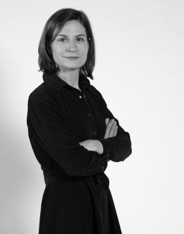

A new London exhibition will celebrate Naomi Campbell's four decades in fashion
After four decades in fashion, the queen of the catwalk is getting her own exhibition.
The Victoria and Albert Museum in London is launching “NAOMI: In Fashion,” a celebration
of Naomi Campbell's enduring career.
The exhibition, which opens in June, will showcase memorable
designer outfits worn by Campbell, one of the most recognizable models and Black women in the world.

“I'm honored to be asked by the V&A to share my life in clothes with the world," Campbell, 53, said in a statement.

Sonnet Stanfill, a fashion curator at the museum, called Campbell
“one of the most prolific
and influential figures in contemporary culture.”
The exhibition will include some 100 looks and accessories from the biggest names in fashion,
from Chanel and Dolce & Gabbana to Versace, Yves Saint Laurent, Alexander McQueen and many others.